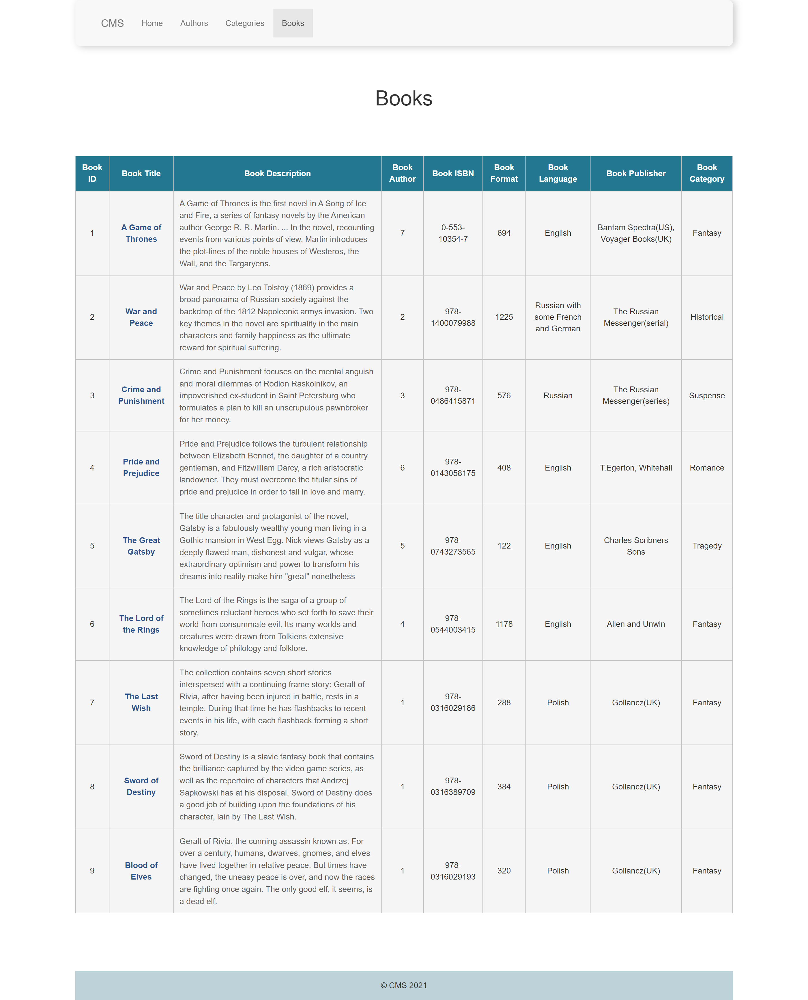
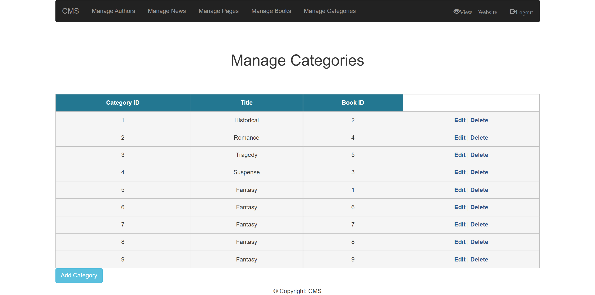

PHP & MySQL PROJECT
Book Store
For this project I created three tables in one database and connected them. This project helped me a lot to understand how databases and tables work.
On this page we can see the books table displayed in the front-end part of the assignment.
On this page we have the categories table being displayed in the front-end part of the assignment
On this page we have the authors table being displayed in the front-end part of the assignment
On this page we have the categories table being displayed in the back-end part of the assignment, where you can edit, delete or add another cateogry in the table.
On this page we have the books table being displayed in the back-end part of the assignment, where you can edit, delete or add another cateogry in the table.
On this page we have the pages table being displayed in the back-end part of the assignment, where you can edit, delete or add another cateogry in the table.
On this page we have the authors table being displayed in the back-end part of the assignment, where you can edit, delete or add another cateogry in the table.